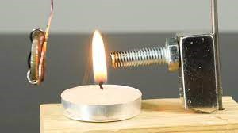

→ QUAL É A ORIGEM DAS PROPRIEDADES MAGNÉTICAS DOS MATERIAIS?
As propriendades magnéticas dos materiais tem sua origem nos átomos, pois quase todos os átomos são dipolos magnéticos naturais e podem ser considerados como pequenos ímãs, com polos norte e sul.
→ O QUE É MOMENTO ANGULAR E SPIN?
Momento angular de um corpo é uma grandeza física associada à rotação desse corpo. Deve-se dizer que, com o advento da mecânica quântica, o status da grandeza física quantidade de movimento angular sofreu uma severa modificação.
Já no momento spin (ou momento angular intrínseco) do átomo é associado um momento magnético, proporcional ao spin. Pode-se mostrar que um campo magnético não uniforme aplica sobre um momento magnético uma força na direção do gradiente do campo.
→ O QUE SÃO ÓRBITAS, SUBCAMADAS E CAMADAS DE UM ÁTOMO?
ÓRBITAS - Os orbitais são regiões na eletrosfera do átomo em que é máxima a probabilidade de se encontrar o elétron, ou a função de onda que descreve o movimento de um elétron.
Os orbitais são representados por nuvens eletrônicas e são diferentes para cada tipo de ligação; assim, para uma ligação do tipo s temos um orbital esférico; e para uma ligação p, temos um orbital na forma de duplo ovoide. Para o orbital de tipo p, há três possibilidades, pois existem três orientações espaciais possíveis (x, y, z):
SUBCAMADAS - Os orbitais em um átomo são agrupados em conjuntos chamados subcamadas. Em átomos no seu estado fundamental quatro tipos de subcamadas são ocupadas por elétrons, designadas por s, p, d e f, que consistem em 1, 3, 5 e 7 orbitais, respectivamente.
CAMADAS - O átomo apresenta 7 camadas eletrônicas: K, L, M, N, O, P e Q. A camada de valência é a camada ou nível eletrônico mais externo do átomo. Cada camada eletrônica apresenta um número máximo de elétrons que consegue comportar.
→ O QUE É UM MATERIAL FERROMAGNÉTICO?
Os materiais ou substâncias ferromagnéticos compreendem um pequeno grupo de substâncias encontradas na natureza, que ao serem colocadas na presença de um campo magnético se imantam fortemente, e o campo magnético delas é muitas vezes maior que o campo que foi aplicado.
→ O QUE SÃO DOMÍNIOS MAGNÉTICOS?
São propriedades microscópicas da matéria,mais precisamente, por movimento dos elétrons e essa movimentação pode se dar de duas formas e ambas contribuem para o efeito magnético, veja abaixo:
1) É a rotação dos elétrons ao redor do próprio eixo também chamada de spin
2) E a outra é a translação ao redor do núcleo.
Na maioria das vezes, o Spin eletrônico é o maior contribuinte para o magnetismo, ao girar em torno de si mesmo, o elétron comporta-se como um pequeno imã.
> Se o elétron girar no sentido horário, é gerado um polo norte para cima e um sul para baixo.
> Se girar no sentido anti-horário, gera um polo norte para baixo e um polo sul para cima.
Os elétrons em rotação representam então um Dipolo Magnético, o qual pode ser representado por meio de uma seta, onde a ponta representa o polo norte e a origem representa o polo sul.
Mas se caso dois elétrons giram em um mesmo sentido, reproduzem um efeito mais intenso, todavia se girarem em sentido opostos, o efeito de um anula o efeito do outro e o efeito magnético se perde.
E é devido a esta última informação que a maioria dos materiais não tem propriedade de imãs porque para a grande maioria dos átomos, os spins estão emparelhados em sentidos opostos.
PS: Mesmo que quebremos o imã em diversos pedaços, ainda haverá diversos pedaços do mesmo, determinando o polo sul e o polo norte.
Mas se um pedaço de ferro, por exemplo, sofrer o efeito de indução magnética, ele pode ser atraído pelo imã e temporariamente terá propriedades magnéticas.
Porém se ele for afastado do material de origem, ele pode ser desmagnetizado, originada pela agitação térmica.
E se porventura, o imã possuir um efeito magnético muito forte, o pedaço de ferro pode manter a magnetização por algum tempo e/ou a outra maneira que você tem para produzir um imã e esfregar um pedaço de ferro em um imã permanente, porque esfregando gera atrito.
→ O QUE É O PONTO DE CURIE?
A temperatura de Curie é a temperatura a que um elemento ferromagnético começa a perder o seu magnetismo, convertendo-se em paramagnético quando este ultrapassa essa temperatura. Quando o material está abaixo da temperatura de Curie, os materiais magnéticos transformam-se em ferromagnéticos. Esta temperatura provém da lei de Curie. Esta estabelece que a suscetibilidade de um material magnético (a capacidade que um material tem para ser magnetizado com um campo magnético externo) é inversamente proporcional à temperatura.

→ O QUE É A PERMEABILIDADE RELATIVA?
A permeabilidade magnética mensura o campo magnético no interior de um material - devido ao campo magnetizante {\vec H} pré-existente na região onde o material é colocado bem como à magnetização por este induzida no material - em relação ao próprio campo magnetizante {\vec H} em questão.
→ COMO CONSTRUIR UM IMÃ?
PASS0 1 - Reúna os equipamentos. Um imã temporário simples pode ser feito com um pedaço pequeno de metal – como um clipe – e um imã de geladeira. Reúna esses itens e traga consigo, também, um pedaço pequeno de metal (como uma agulha ou um brinco). Esse pequeno pedaço de metal será usado para testar as propriedades do clipe magnetizado.
Faça experimentos com clipes de diferentes tamanhos, pintados e sem tinta.
Reúna objetos menores de diversos tamanhos e metais para ver quais se grudarão nos clipes.
PASS0 2 - Esfregue o imã contra o clipe. Esfregue-o sempre na mesma direção, sem fazer movimentos de ida e volta. Use o mesmo movimento rápido que usaria para acender um fósforo. Continue esfregando o clipe com o imã por 50 vezes, o mais rápido que conseguir.
PASS0 3 - Toque o clipe num pedaço menor de metal. O pequeno pedaço de metal se gruda ao clipe? Se sim, você o magnetizou com sucesso.
Se o clipe não atrair o pequeno pedaço de metal, esfregue-o mais 50 vezes e tente novamente.
Tente pegar outros clipes de papel e objetos maiores para determinar a potência do imã.
Considere anotar quanto tempo o clipe permanece magnetizado após determinado número de esfregadas. Experimente com diferentes tipos de metal, como tachinhas ou agulhas, para ver qual deles produz o imã mais forte e duradouro.